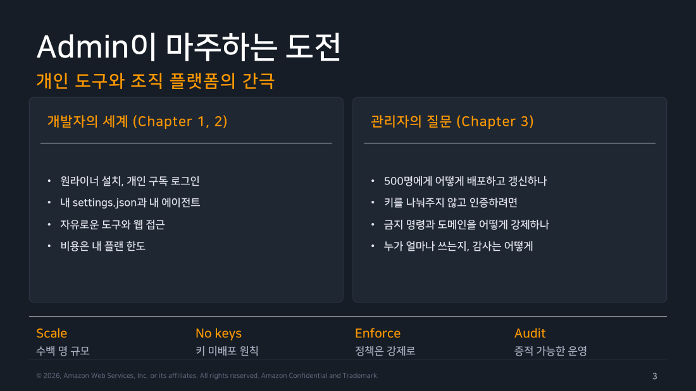
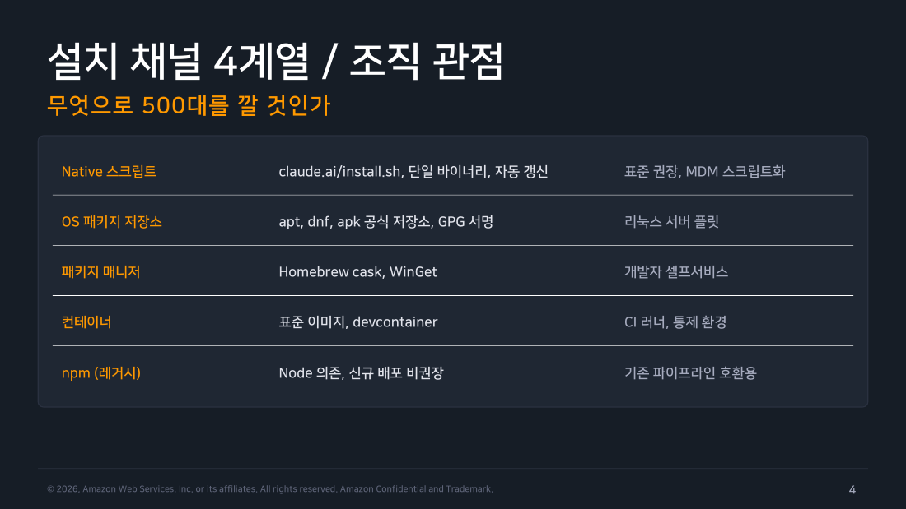
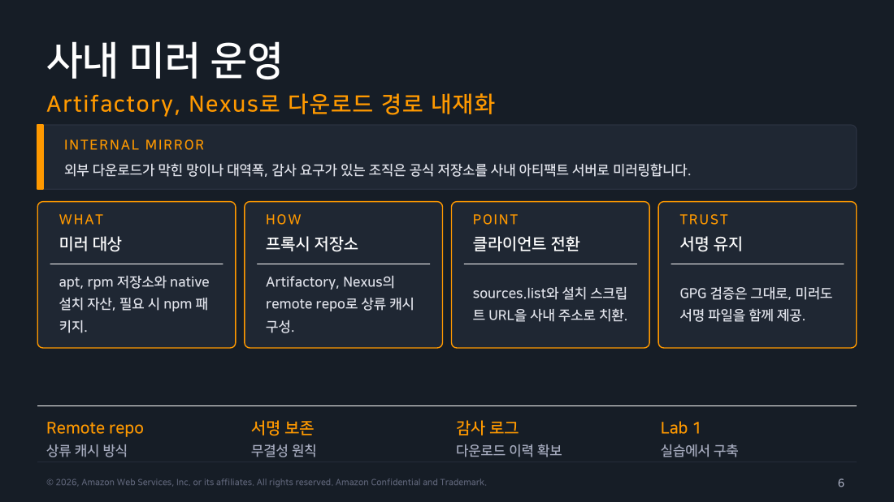
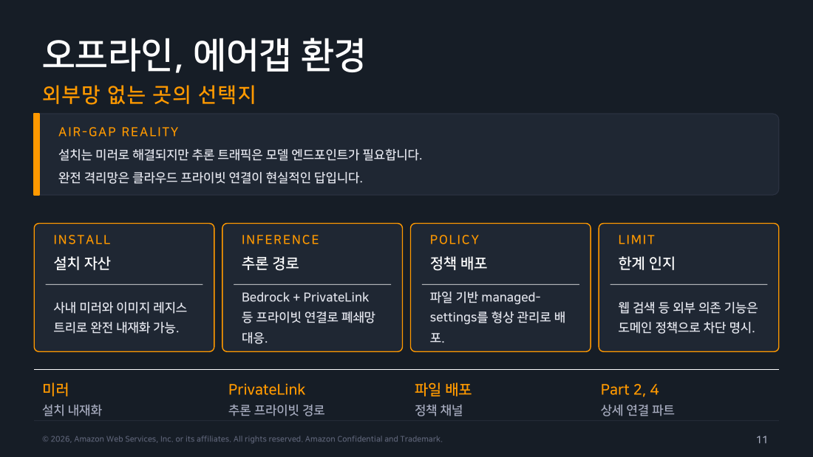

Part 1 — 배포 전략¶
한 줄 요약¶
설치는 플랫폼마다 미리 정해둔 표준 조합으로 합니다. 갱신은 두 개의 손잡이로 통제합니다. 얼마나 빨리 새 버전을 받을지 정하는 "채널", 그리고 얼마나 낮은 버전까지 허용할지 정하는 "하한선"입니다. 확산은 전원에게 한 번에 뿌리지 않고 소수 그룹부터 단계적으로 넓히는 "링(ring)" 방식으로 합니다. 개인이 curl | bash 한 줄로 끝내던 일이 500대 앞에서는 배포·서명·버전·롤백을 모두 설계해야 하는 문제로 바뀝니다.
왜 알아야 하나¶
1주차와 2주차는 전부 내 노트북 안의 이야기였습니다. 설치는 스크립트 한 줄이면 됐고, 버전은 자동 갱신이 알아서 맞춰줬고, 설정은 내 홈 디렉토리에 있었고, 뭔가 잘못되면 지우고 다시 깔면 됐습니다. 이 전제가 전부 무너지는 순간이 있습니다. "우리 회사 개발자 500명에게 이걸 깔아주세요" 라는 요청을 받는 순간입니다.
그때부터 질문의 성격이 달라집니다. 어떤 설치 방법을 골라야 MDM으로 밀어넣을 수 있을까요. MDM(Mobile Device Management)은 회사가 직원 장비에 소프트웨어와 설정을 원격으로 일괄 배포하는 관리 시스템입니다. 다운로드 주소가 회사 방화벽에서 열려 있기는 한지도 확인해야 합니다. 서명 검증은 누가 하는지, 어제까지 잘 되던 게 자동 갱신 후 깨졌을 때 어떻게 되돌리는지도 정해야 합니다. 보안팀이 "이 실행 파일을 어디서 받았는지 감사 로그를 주세요"라고 하면 낼 것도 있어야 합니다.
이 질문들은 전부 도구의 기능에 관한 게 아닙니다. 배포 시스템을 어떻게 설계했느냐에 관한 질문입니다.
이 파트는 그 관점 전환을 다룹니다. 개발자용 문서에서는 한 줄이던 설치가 관리자용 문서에서는 하나의 챕터가 되는 이유이기도 합니다.

▲ 교재 슬라이드 3 — Admin이 마주하는 도전
현장 메모
이 목록이 낯설지 않게 느껴진다면 이유가 있습니다. 조직에 새 개발 도구를 들일 때 거치는 체크리스트와 항목이 정확히 겹치기 때문입니다. 배포 채널은 무엇으로 할지, 서명은 검증하는지, 버전을 특정 값에 묶어둘지(버전 핀), 문제가 생기면 어떻게 되돌릴지, 감사 로그는 남는지까지 항목이 그대로입니다. Claude Code라서 특별한 게 아닙니다. 조직에 도입되는 모든 실행 파일이 통과해야 하는 관문이 여기서도 똑같이 적용될 뿐입니다. 오히려 이 챕터가 쉽게 느껴진다면, 그건 이미 아는 문제를 새 대상에 적용하고 있기 때문입니다.
1. 설치 채널 4계열 — 무엇으로 500대를 깔 것인가¶
설치 방법이 여러 개인 이유는 취향의 문제가 아닙니다. 설치를 실행하는 주체와 환경이 서로 다르기 때문입니다.
네 가지 상황을 떠올려 보세요. 관리자가 MDM으로 직원 노트북에 밀어넣는 경우, 서버 플릿에 Ansible로 뿌리는 경우, 개발자가 자기 맥북에 알아서 까는 경우, 그리고 CI 러너 이미지에 미리 구워두는 경우입니다.
낯선 용어를 먼저 풀어두면 이렇습니다. 플릿(fleet)은 조직이 함께 관리하는 장비 무리를 말합니다. Ansible은 서버 설정 작업을 코드로 적어두고 여러 대에 한꺼번에 적용하는 자동화 도구입니다. CI(Continuous Integration)는 코드가 올라올 때마다 자동으로 빌드와 테스트를 돌려주는 시스템이고, CI 러너는 그 작업을 실제로 실행하는 서버입니다.
네 상황은 요구사항이 전부 다릅니다. 그래서 "무엇이 최선인가"가 아니라 "이 대상에는 무엇이 맞는가" 로 접근해야 합니다.
flowchart TD
Q{"설치를 누가, 어디에 하는가"}
Q -->|"관리자가 플릿 전체에 일괄"| A["<b>Native 스크립트</b><br/>claude.ai/install.sh<br/>단일 바이너리 · 자동 갱신"]
Q -->|"대상이 리눅스 서버"| B["<b>OS 패키지 저장소</b><br/>apt · dnf · apk<br/>GPG 서명 검증 포함"]
Q -->|"개발자가 스스로 설치"| C["<b>패키지 매니저</b><br/>Homebrew cask · WinGet<br/>셀프서비스 경로"]
Q -->|"CI 러너 · 통제된 개발 환경"| D["<b>컨테이너 이미지</b><br/>버전 고정 · 정책 내장"]
Q -->|"기존 Node 파이프라인 호환"| E["<b>npm</b><br/>설치 시점만 Node 필요<br/>설치되는 건 네이티브 바이너리"]
style Q fill:#673ab7,stroke:#4527a0,stroke-width:3px,color:#fff
style A fill:#e8f5e9,stroke:#388e3c,color:#000
style B fill:#e3f2fd,stroke:#1976d2,color:#000
style C fill:#e3f2fd,stroke:#1976d2,color:#000
style D fill:#e3f2fd,stroke:#1976d2,color:#000
style E fill:#f5f5f5,stroke:#9e9e9e,color:#000각 갈래를 조직 관점에서 풀어보면 이렇습니다.
-
Native 설치 스크립트:
claude.ai/install.sh가 실행 파일 하나(단일 바이너리)를 내려받아 배치합니다. Node 런타임(JavaScript 프로그램을 실행하는 별도 프로그램)이 따로 필요 없고 자동 갱신이 내장돼 있습니다. 그래서 교재가 표준 권장으로 꼽는 경로입니다. MDM에서는 이 스크립트를 감싸 배포 스크립트로 만들면 됩니다. -
OS 패키지 저장소: 리눅스의 소프트웨어 설치 도구인 apt, dnf, apk가 바라보는 공식 저장소를 등록하는 방식입니다. GPG(파일에 전자 서명을 붙이고 그 서명이 진짜인지 확인하는 암호 도구) 검증이 패키지 매니저 차원에서 강제되고, 설치 이력이 시스템 로그에 남습니다. 리눅스 서버 플릿에 적합합니다.
-
패키지 매니저: macOS의 Homebrew cask, Windows의 WinGet입니다. 개발자가 이미 익숙한 명령으로 스스로 설치하는 셀프서비스 경로입니다. 사내 표준을 강제하기보다 편의를 제공하는 성격입니다.
-
컨테이너: 표준 이미지나 devcontainer(에디터가 컨테이너 안에서 그대로 열리는 개발 환경 정의)에 미리 구워둡니다. CI 러너와 통제된 개발 환경용이고, 뒤에서 따로 다룹니다.
여기에 하나가 더 붙습니다. 바로 npm 설치입니다. npm은 JavaScript 생태계의 표준 패키지 관리 도구입니다.
교재는 npm 설치를 레거시(예전 방식)로 분류하지만, 공식 문서 기준으로는 정정이 필요합니다. npm 패키지도 네이티브 설치와 동일한 네이티브 바이너리를 설치하고, 설치된 claude 실행 파일 자체는 Node를 호출하지 않습니다. Node 런타임이 필요한 건 설치 시점(npm install 실행)뿐입니다. 현재 공식 문서는 npm을 "레거시"나 "신규 배포 비권장"으로 분류하지 않습니다. 오히려 기존 Node 파이프라인에 자연스럽게 얹을 수 있다는 것이 이 경로의 장점입니다. 다만 설치 시점의 Node 버전 요건(22.15 이상)은 챙겨야 합니다.

▲ 교재 슬라이드 4 — 설치 채널 4계열 / 조직 관점
현장 메모
1주차 실습에서 제 머신은 npm 설치인데 자동 업데이트가 정상 동작하고 있었습니다. "Native만 자동 갱신된다"고 단정했다가 제 실습 로그에 반증당한 사례입니다. 설치 채널별 특성을 외울 때 "이 채널은 X가 안 된다"는 부정형 주장은 특히 조심해야 합니다. 실제로는 되는데 권장되지 않을 뿐인 경우가 섞여 있기 때문입니다. 조직 표준을 문서로 쓸 때는 "안 된다"와 "지원하지 않는다"와 "권장하지 않는다"를 구분해서 적어두세요. 나중에 문의가 줄어듭니다.
2. Linux 플릿 — GPG 지문 대조가 신뢰의 출발점¶
리눅스 서버에 저장소를 등록하는 절차 자체는 정해진 형태가 있습니다. 서명 확인용 키를 받고, 저장소 주소를 추가하고, 설치합니다. 중요한 건 그 사이에 끼어 있는 한 줄의 검증입니다.
# fleet provisioning (apt)
sudo install -d -m 0755 /etc/apt/keyrings
sudo curl -fsSL https://downloads.claude.ai/keys/claude-code.asc \
-o /etc/apt/keyrings/claude-code.asc
gpg --show-keys /etc/apt/keyrings/claude-code.asc
# 지문 대조: 31DD DE24 DDFA B679 F42D 7BD2 BAA9 29FF 1A7E CACE
echo "deb [signed-by=/etc/apt/keyrings/claude-code.asc] \
https://downloads.claude.ai/claude-code/apt/stable stable main" \
| sudo tee /etc/apt/sources.list.d/claude-code.list
sudo apt update && sudo apt install claude-code
여기서 "지문(fingerprint)"은 키마다 하나씩 붙는 짧은 요약 문자열입니다. 키 전체를 눈으로 비교할 수는 없으니, 이 짧은 값만 공식적으로 공표된 값과 대조해 키가 진짜인지 확인합니다.
gpg --show-keys로 지문을 뽑아 공표된 값과 눈으로 맞춰보는 단계는 생략해도 설치가 됩니다. 그래서 자주 생략됩니다. 하지만 이 단계를 빼면 어떻게 될까요. "방금 받은 키가 진짜 Anthropic의 키인가"를 아무도 확인하지 않은 채 그 키로 서명된 모든 패키지를 신뢰하게 됩니다. 키를 받아오는 경로가 한 번 오염되면, 이후의 모든 서명 검증은 통과하면서도 의미를 잃습니다. 검증이 믿고 출발하는 뿌리가 바로 이 키라서, 이 한 줄이 절차의 핵심입니다.
저장소 주소에 stable이 들어가 있는 것도 놓치면 안 되는 부분입니다. 제품 기본값은 latest이지만, 플릿에는 stable을 조직이 명시적으로 설정해서 씁니다. 이 선택이 6절의 버전 통제와 이어집니다.
dnf와 apk도 키를 두는 위치와 저장소 정의 파일 형식만 다를 뿐 같은 패턴입니다. 실무에서는 이 절차 전체를 Ansible 롤(여러 태스크를 재사용 가능한 묶음으로 만든 것)로 코드화해 두고, 새 서버를 준비할 때마다 자동으로 실행되게 합니다.
현장 메모
지문 대조를 Ansible로 코드화할 때 빠지기 쉬운 구성이 하나 있습니다. 지문 값을 태스크 안에 그대로 박아두고 assert(조건이 맞지 않으면 실행을 실패시키는 검증 단계)로 확인하게 만드는 구성입니다. 이러면 Anthropic이 키를 정상적으로 교체했을 때(롤오버) 전 플릿의 서버 준비 작업이 한꺼번에 실패합니다. 지문 값을 별도 변수 파일로 빼고, 그 파일이 바뀔 때마다 리뷰를 거치게 하는 구성이 안전합니다. 검증을 없애자는 게 아닙니다. 검증 기준값을 바꾸는 행위 자체를 사람이 승인하게 만드는 겁니다.
3. 사내 미러 — 다운로드 경로를 조직 안으로¶
서로 다르게 들리는 세 가지 상황이 있습니다. 외부 인터넷 다운로드가 아예 막혀 있는 망(폐쇄망), 수백 대가 동시에 갱신될 때 회선 부하를 걱정해야 하는 조직, 그리고 "이 실행 파일을 언제 누가 받았는지 대라"는 감사 요구를 받는 조직입니다.
세 상황의 해법은 하나로 수렴합니다. 공식 저장소를 사내 아티팩트 서버로 미러링하는 것입니다. 아티팩트 서버는 라이브러리·패키지·빌드 산출물을 회사 안에 모아두고 배포하는 저장 서버를 말합니다.
미러링 대상은 apt·rpm 저장소와 native 설치 파일이고, 필요하면 npm 패키지도 포함합니다. 구성 방식은 Artifactory나 Nexus 같은 아티팩트 서버 제품의 remote repository(프록시 저장소) 기능을 쓰는 것입니다.
이 기능이 어떻게 동작하는지가 중요합니다. 미러 서버가 패키지를 미리 통째로 복사해두는 게 아닙니다. 클라이언트 요청이 들어오면 그때 원본 저장소(상류)에서 받아와 전달하면서, 지나가는 김에 사본을 남깁니다. 클라이언트 쪽에서 할 일은 저장소 주소 파일(sources.list)과 설치 스크립트 주소를 사내 주소로 바꾸는 것뿐입니다. 설치 절차 자체는 그대로 유지됩니다.
여기서 절대 타협하면 안 되는 원칙이 서명 유지입니다. 미러를 거치더라도 GPG 검증은 그대로 살아 있어야 합니다. 그러려면 미러가 패키지뿐 아니라 서명 파일도 함께 제공해야 합니다. 미러 구성을 편하게 하려고 서명 검증을 끄는 옵션([trusted=yes] 같은)을 쓰는 순간, 폐쇄망을 만든다면서 오히려 "이 파일이 중간에 바뀌지 않았는가"를 확인하는 장치를 스스로 없앤 꼴이 됩니다.
미러를 두면 부수적으로 따라오는 것이 감사 로그입니다. 누가 언제 어떤 버전을 받아갔는지가 아티팩트 서버의 접근 로그에 남습니다. 감사 대응 때문에 미러를 도입하는 조직도 실제로 있습니다.

▲ 교재 슬라이드 6 — 사내 미러 운영
현장 메모
Artifactory나 Nexus를 이미 운영하고 있다면 remote repo를 하나 더 만드는 것 자체는 큰 작업이 아닙니다. 더 신경 써야 할 쪽은 뒷정리입니다. remote repo는 상류에서 받아온 파일을 계속 쌓아둡니다. 오래된 사본을 자동으로 지우는 보관 정책(리텐션 정책)을 걸어두지 않으면, 몇 달 뒤 스토리지 용량 알람으로 돌아옵니다.
그리고 미러를 도입한 조직이라면 반드시 한 번은 겪는 일이 있습니다. 개발자가 자기 노트북에서 npm config 설정을 직접 바꿔 미러를 우회하는 경우입니다. 그 사람만 다른 버전을 쓰게 되고, 결국 남들은 재현하지 못하는 이슈를 만듭니다. 미러는 띄우는 것보다 강제하는 것이 어렵습니다. MDM으로 클라이언트 설정을 일괄 배포하고, 방화벽에서 외부 저장소를 실제로 막아야 미러가 의미를 갖습니다.
현장 메모
그리고 "미러를 한 번 통과시켜 봤으니 이제 전부 캐시돼 있겠지"라는 전제는 패키지 구조에 따라 성립하지 않을 수 있습니다. 아래 직접 해보기에서 실제로 확인한 함정입니다. 에어갭(외부망과 물리적으로 완전히 분리된 망)을 계획하고 있다면 미러를 띄운 것으로 끝내지 마세요. 상류 연결을 실제로 끊어놓고 설치가 되는지까지 검증해야 합니다.
4. Windows 대량 배포 — WinGet과 레지스트리 정책¶
Windows 플릿은 다른 플랫폼과 결이 다릅니다. 프로그램을 설치하는 경로와 정책을 내려보내는 경로가 서로 분리돼 있기 때문입니다.
먼저 설치입니다. 설치는 Windows 기본 패키지 도구인 WinGet으로 합니다. Intune이나 SCCM(둘 다 마이크로소프트의 장비 관리 시스템으로, 회사가 직원 PC에 소프트웨어와 정책을 일괄 배포할 때 씁니다)의 배포 스크립트에서 무인 설치 플래그를 붙여 호출하는 형태입니다. 무인 설치란 사용자에게 "다음" 버튼을 묻지 않고 끝까지 자동으로 진행하는 방식을 말합니다.
# Intune, SCCM 배포 스크립트 골격
winget install Anthropic.ClaudeCode --silent `
--accept-package-agreements
다음은 정책입니다. 정책은 설치와 별개로 레지스트리(Windows가 설정값을 모아 보관하는 시스템 데이터베이스)에 배치합니다. 위치는 HKLM\SOFTWARE\Policies\ClaudeCode입니다.
여기서 HKCU가 아니라 HKLM이라는 점이 핵심입니다. HKCU는 로그인한 사용자 개인 영역이고, HKLM은 그 PC 전체에 적용되는 영역입니다. HKLM에 쓰려면 관리자 권한이 필요하므로, 일반 사용자가 자기 정책을 임의로 바꿀 수 없습니다. 그래서 함부로 고칠 수 없는 성질(변조 저항) 이 생깁니다. 정책의 상세 항목은 Part 5에서 다룹니다. 여기서는 "Windows에서 정책이 사는 곳은 레지스트리"라는 위치만 기억하면 됩니다.
WSL을 병행하는 조직에는 하나가 더 필요합니다. WSL(Windows Subsystem for Linux)은 Windows 안에서 리눅스 환경을 그대로 돌리는 기능입니다. Windows 쪽에 정책을 걸어놨더라도, 개발자가 WSL 안에서 Claude Code를 실행하면 그건 리눅스 환경이라 Windows 정책이 적용되지 않습니다.
이때 wslInheritsWindowsSettings: true로 두면 Windows 정책이 WSL까지 상속되어 정책이 하나로 통일됩니다. Windows 개발자가 실질적으로 WSL에서 작업하는 조직이라면, 이 키를 빠뜨리는 순간 정책에 구멍이 뚫립니다.
WinGet을 쓰지 않는 배포 인프라를 가진 조직이라면 MSI(Windows 표준 설치 패키지 형식) 패키징이 필요할 수 있습니다. 이 경우 별도 문의 경로가 있습니다.
현장 메모
HKLM 정책은 "관리자 권한이 있어야 바꿀 수 있다"는 뜻입니다. "아무도 못 바꾼다"는 뜻이 아닙니다. 개발자 장비에 로컬 관리자 권한을 주는 조직이라면, 이 방어는 규칙을 지킬 생각이 있는 사용자에게만 유효합니다.
정책 우회를 실제로 막고 싶다면 로컬 관리자 권한을 회수하는 게 먼저입니다. 그게 현실적으로 어렵다면 차단이 아니라 탐지로 전략을 바꾸는 편이 낫습니다. 정책 레지스트리 값이 바뀐 것을 EDR(Endpoint Detection and Response, 단말에서 벌어지는 수상한 변화를 감시·기록하는 보안 제품)이나 구성 관리 도구가 "설정이 기준에서 벗어났다(드리프트)"고 잡아내게 하는 방식입니다. 이건 Part 6의 관측 주제와 이어집니다.
5. 표준 컨테이너 이미지 — 재현 가능성을 굽는다¶
CI 러너와 통제된 개발 환경에서는 컨테이너 이미지가 배포 단위가 됩니다. 컨테이너 이미지란 OS·도구·설정을 통째로 묶어 굳혀둔 실행 환경 스냅샷입니다. 이걸 배포 단위로 쓴다는 건, 개별 머신에 하나씩 설치하는 대신 "이 이미지를 쓰세요"로 환경을 통일한다는 뜻입니다.
이미지를 만들 때는 세 가지 원칙이 들어갑니다.
FROM ubuntu:24.04
RUN apt-get update && apt-get install -y \
curl git ca-certificates ripgrep jq
RUN curl -fsSL https://claude.ai/install.sh | bash -s 2.1.201
ENV PATH="/root/.local/bin:${PATH}"
ENV DISABLE_AUTOUPDATER=1
COPY managed-settings.json /etc/claude-code/
WORKDIR /workspace
-
버전 고정:
install.sh에 버전 번호를 인자로 넘겨 특정 버전을 박아둡니다. 같은 이미지 이름으로 빌드하면 항상 같은 Claude Code 버전이 나와야, CI가 어제와 같은 결과를 냅니다. -
자동 갱신 차단:
DISABLE_AUTOUPDATER=1을 설정합니다. 이게 없으면 컨테이너가 뜰 때마다 버전이 달라질 수 있습니다. 그러면 방금 고정한 버전이 무의미해집니다. 이미지 내용이 변하지 않게 지키려면 버전 고정과 갱신 차단이 반드시 짝을 이뤄야 합니다. -
정책 내장: 관리자용 설정 파일인
managed-settings.json을/etc/claude-code/에 미리 복사해 이미지 안에 굽습니다. 컨테이너가 뜬 다음에 정책을 밀어넣는 방식 대신 이미지에 포함시키면, 정책 없이 실행되는 컨테이너가 아예 존재할 수 없게 됩니다.
같은 이미지를 devcontainer로도 배포하면 개발자들이 조직 표준 개발 환경을 공유하게 됩니다. 각자 설치한 서로 다른 버전이 섞이는 상황이 사라진다는 뜻입니다. CI와 개발자 로컬이 같은 이미지를 쓰면 "제 로컬에서는 되는데요" 유형의 문제도 상당 부분 사라집니다.
현장 메모
ripgrep과 jq가 베이스 이미지에 들어 있는 걸 그냥 지나치지 마세요. ripgrep(명령어는 rg)은 아주 빠른 코드 검색 도구인데, Claude Code가 코드를 찾을 때 이걸 적극적으로 씁니다. jq는 JSON 데이터를 명령줄에서 다루는 도구입니다. 화면 없이 명령만으로 Claude Code를 돌릴 때(헤드리스 실행) --output-format json으로 받은 결과를 파이프라인에서 처리하려면 jq가 필요합니다.
이미지 용량을 줄이겠다고 alpine이나 distroless 같은 최소 이미지로 갈아타면서 이 둘을 빼면, 에이전트가 조용히 느려지거나 파이프라인이 깨집니다. 컨테이너를 다이어트할 때는 실제로 쓰이는지를 실행 로그로 확인한 다음에 빼는 게 안전합니다.
6. 버전 통제 두 다이얼 — 채널과 최소 버전¶
500대의 버전을 어떻게 관리할지는 두 개의 독립된 손잡이로 정리됩니다. 하나는 얼마나 빨리 올릴 것인가(속도)이고, 다른 하나는 얼마나 낮은 버전까지 허용할 것인가(하한선)입니다. 서로 다른 질문이므로 섞어 생각하면 정책이 꼬입니다.
flowchart LR
M["<b>managed-settings.json</b><br/>개인이 바꿀 수 없는 정책 채널"]
M --> D1["<b>다이얼 1 · autoUpdatesChannel</b><br/>갱신 속도<br/>stable = 플릿에 명시 설정<br/>latest = 얼리어답터 링만"]
M --> D2["<b>다이얼 2 · requiredMinimumVersion</b><br/>기동 차단형 하한선<br/>미달 버전은 아예 시작 못 함"]
D1 --> F["<b>완전 고정</b><br/>DISABLE_AUTOUPDATER=1<br/>+ 버전 지정 설치<br/>CI · 컨테이너 전용"]
D2 --> F
style M fill:#673ab7,stroke:#4527a0,stroke-width:3px,color:#fff
style D1 fill:#e3f2fd,stroke:#1976d2,color:#000
style D2 fill:#e3f2fd,stroke:#1976d2,color:#000
style F fill:#fff3e0,stroke:#f57c00,color:#000다이얼 1은 autoUpdatesChannel입니다. 갱신 속도를 정하는 키입니다. 제품 기본값은 latest이지만, 플릿에는 stable을 명시적으로 설정합니다. 새 기능을 며칠 늦게 받는 대신, 검증을 거친 빌드만 받게 됩니다.
latest는 뒤에서 설명할 롤아웃 링 중 얼리어답터 그룹에만 열어둡니다. 전사에 latest를 걸면 문제가 있는 버전이 나왔을 때 전원이 동시에 그 문제를 맞기 때문입니다.
다이얼 2는 버전 하한선입니다. 하한선은 성격이 다른 두 계열의 키로 나뉩니다.
minimumVersion은 갱신 시점의 하한입니다. 백그라운드 자동 갱신과 claude update가 이 값보다 낮은 버전을 설치하지 못하게 막습니다. 즉 버전이 뒤로 내려가는 것(다운그레이드)을 막는 용도입니다. 이미 그보다 낮은 버전이 깔려서 돌아가고 있는 상황까지 막지는 못합니다.
진짜 강제가 필요할 때는 다른 키를 씁니다. 보안 수정이 급해서 구버전을 아예 못 쓰게 하고 싶은 경우가 여기 해당합니다. 이때는 requiredMinimumVersion/requiredMaximumVersion을 쓰는데, 이 범위를 벗어난 버전은 실행 자체가 거부됩니다. minimumVersion보다 한 단계 더 강한 키입니다.
셋을 자동차에 비유하면 이렇습니다. 채널이 액셀이라면, minimumVersion은 뒤로 밀리지 않게 막아주는 턱이고, requiredMinimumVersion은 더 내려갈 수 없는 바닥입니다.
완전 고정은 위 두 다이얼과는 별개의 선택지입니다. DISABLE_AUTOUPDATER=1에 버전을 지정한 설치를 더하면 됩니다. 다만 이 환경 변수는 백그라운드 자동 확인만 끄는 것이라, claude update나 claude install을 사람이 직접 치면 여전히 버전이 올라갑니다.
어떤 경로로도 못 올라가게 하려면 DISABLE_UPDATES까지 같이 걸어야 합니다. 사내 미러로만 배포하고 그 버전에 묶어두고 싶을 때 필요한 설정입니다.
다만 교재는 이 완전 고정 조합을 CI 전용으로 한정합니다. 개발자 장비에 완전 고정을 걸면 재현성은 얻지만 보안 수정도 같이 막힙니다. 결국 누군가 수동으로 올려주기 전까지 아무도 버전이 올라가지 않는 상태가 됩니다.
세 종류의 키 모두 managed settings(관리자가 내려보내는 설정으로, 개인이 덮어쓸 수 없습니다)에 넣는 것이 전제입니다. 사용자 개인 설정에 두면 통제가 아니라 권고가 됩니다.
7. 점진 롤아웃 — 파일럿에서 전사까지 4링¶
500대에 한 번에 까는 건 배포가 아니라 사고입니다.
그래서 쓰는 표준 형태가 링(ring) 방식입니다. 대상을 동심원처럼 몇 단계로 나눠 두고, 안쪽 소수 그룹부터 시작해 바깥으로 순차 확산시키는 방법입니다. 단계 사이마다 관문을 두고, 얼마나 쓰이고 있는지(채택 지표)와 사고가 없었는지를 확인한 다음 다음 링으로 넘어갑니다.
여기서 중요한 건 각 링이 정책과 버전을 서로 독립적으로 조정할 수 있다는 점입니다. 링 0만 latest 채널을 쓰고 나머지는 stable을 쓰는 식의 구성이 가능해집니다.
flowchart LR
R0["<b>Ring 0 · 챔피언 10명</b><br/>latest 채널<br/>피드백 루프 구축"]
R1["<b>Ring 1 · 파일럿 팀 50명</b><br/>stable 전환<br/>managed 정책 초판 적용"]
R2["<b>Ring 2 · 부문 200명</b><br/>교육 자료 배포<br/>채택 지표 관측"]
R3["<b>Ring 3 · 전사</b><br/>표준 온보딩<br/>지원 체계 정착"]
R0 -->|"관문: 치명 사고 0"| R1
R1 -->|"관문: 정책 충돌 해소"| R2
R2 -->|"관문: 지표·비용 안정"| R3
style R0 fill:#e8f5e9,stroke:#388e3c,color:#000
style R1 fill:#e3f2fd,stroke:#1976d2,color:#000
style R2 fill:#e3f2fd,stroke:#1976d2,color:#000
style R3 fill:#fff3e0,stroke:#f57c00,color:#000네 링은 각각 성격이 다릅니다.
-
링 0(챔피언 10명): 버전을 검증하는 단계라기보다 피드백 통로를 만드는 단계입니다.
latest채널을 물려 문제를 먼저 맞아주는 역할을 맡고, 대신 이들이 나중에 각 팀의 전파자가 됩니다. -
링 1(파일럿 50명): 여기서 처음으로 managed 정책 초판이 적용됩니다. 정책이 실제 업무를 막지는 않는지 확인하는 구간입니다. 여기서 나온 정책 충돌을 해소하지 않고 넘어가면, 링 2에서 200명분의 문의가 한꺼번에 들어옵니다.
-
링 2(부문 200명): 교육 자료 배포와 지표 관측이 중심이 됩니다.
-
링 3(전사): 표준 온보딩 절차와 지원 체계를 정착시키는 단계입니다.
현장 메모
링 방식에서 어려운 지점은 링을 나누는 게 아니라 관문에서 멈추는 것입니다. 일정이 정해진 도입 프로젝트라면 링 1에서 문제가 나와도 "링 2 가면서 같이 고치자"는 판단이 나오기 쉽습니다. 그래서 관문 조건은 미리 숫자로 못 박아두는 게 좋습니다. "치명 이슈 0건, 2주간 일 1회 이상 사용률 N% 이상" 같은 형태로요.
그리고 링을 조직도(부서 단위)대로 나누지 마세요. 기술 스택과 환경이 골고루 섞이도록 나누는 편이 문제를 일찍 발견합니다. 폐쇄망을 쓰는지, OS가 무엇인지, WSL을 쓰는지 같은 기준으로요. 링 3에 가서야 처음으로 폐쇄망 팀이 들어오면, 그때 첫 에어갭 이슈를 만나게 됩니다.
8. 오프라인·에어갭 — 설치는 되지만 추론은 다른 문제¶
여기가 이 파트에서 가장 오해가 많은 지점입니다. "미러를 구축했으니 폐쇄망 대응 끝"이 아닙니다.
이유는 단순합니다. 미러가 해결하는 것은 설치에 필요한 파일들뿐입니다. 그런데 Claude Code는 설치된 뒤에도 모델 서버와 통신해야 동작하는 도구입니다. 설치가 끝났다고 쓸 수 있게 되는 게 아니라는 뜻입니다.
그래서 문제를 네 갈래로 갈라서 봐야 합니다.
-
설치 자산: 사내 미러와 이미지 저장소로 완전히 회사 안에 들여올 수 있습니다. 앞 절들에서 다룬 대로 해결됩니다.
-
추론 경로: 완전히 격리된 망에서 모델을 어떻게 호출할 것인가가 진짜 문제입니다. 여기서 "추론"은 모델에 질문을 보내고 답을 받아오는 과정을 말합니다. 현실적인 답은 Bedrock + PrivateLink 같은 클라우드 전용 연결입니다. Bedrock은 AWS에서 Claude 같은 모델을 제공하는 서비스이고, PrivateLink는 인터넷을 거치지 않고 회사 전용 네트워크 안에서 AWS 서비스에 닿는 통로를 만들어 주는 기능입니다. 상세는 Part 2에서 다룹니다.
-
정책 배포: 파일 형태인
managed-settings.json을 형상 관리 도구(파일 변경 이력을 남기고 여러 서버에 같은 상태로 배포하는 도구)로 뿌리면 됩니다. 외부 정책 서버에 접속할 필요가 없다는 뜻이라, 폐쇄망에서도 정책 배포는 문제없이 동작합니다. -
한계 인지: 웹 검색처럼 외부 접속이 기능의 본질인 것은 폐쇄망에서 동작하지 않습니다. 여기서 중요한 건 "안 되니까 어쩔 수 없다"로 끝내지 않는 것입니다. 도메인 정책으로 차단을 명시해 두세요. 되는 줄 알고 썼다가 조용히 실패하는 것보다, 처음부터 막혀 있는 편이 낫습니다.

▲ 교재 슬라이드 11 — 오프라인, 에어갭 환경
현장 메모
에어갭 환경에 파일을 들여보내는 절차(반입)에서 병목이 되는 건 기술이 아니라 승인인 경우가 많습니다. 반입 매체에 담을 파일 목록을 사전에 확정해야 하는데, 미러를 통째로 복사하는 방식은 "이 안에 정확히 뭐가 들어 있는지" 설명하기가 어렵습니다.
그래서 승인을 통과시키려면 반입할 버전을 못 박고, 그 버전에 필요한 파일 목록과 체크섬(파일이 중간에 변조되지 않았는지 확인하는 검증값)을 명세로 만들어 함께 반입합니다. 이때 아래 실습에서 확인했듯 "미러에 캐시된 것"과 "설치에 실제로 필요한 것"이 일치하지 않을 수 있습니다. 그러니 반입 명세는 미러 저장 폴더를 믿고 뽑지 마세요. 상류 연결을 끊은 상태에서 설치가 성공하는지로 검증해서 만들어야 합니다.
현장 메모
폐쇄망에서 자동 갱신을 그대로 켜두면 어떻게 될까요. 매번 갱신 서버에 도달하지 못해 실패하고, 그 실패가 로그를 채우거나 실행을 지연시킵니다. 그래서 에어갭 환경에는 5절의 컨테이너와 같은 원칙(버전 고정 + 갱신 차단 + 정책 내장)을 장비에도 그대로 적용합니다. 갱신은 정기 반입 주기에 맞춰 사람이 밀어넣는 이벤트로 다루는 편이 깔끔합니다.
9. 플랫폼별 표준 조합과 도입 전 산정¶
지금까지의 내용을 OS별로 접으면 조직의 표준 조합이 나옵니다.
- macOS: Native 설치 + MDM 스크립트로 배포하고, 정책은 plist(macOS가 설정값을 담는 표준 파일 형식)로 얹습니다. 배포 도구는 Jamf나 Kandji 같은 macOS 전용 장비 관리 제품을 씁니다.
- Windows: WinGet + Intune으로 배포하고 정책은 HKLM 레지스트리에 둡니다. WSL을 병행하는 조직이면 앞서 본 상속 키를 함께 겁니다.
- Linux: apt/dnf 저장소로 설치하고 정책은
/etc/claude-code에 두며, 이 절차를 Ansible로 코드화합니다. - 컨테이너: 표준 이미지에 정책을 내장하고 갱신을 차단해서 CI와 devcontainer에 씁니다.
플랫폼마다 정책이 사는 곳이 다르다는 게 이 조합에서 가장 부담스러운 부분입니다. 그런데 검증 방법은 하나로 통일됩니다. 전 플랫폼에서 /status를 실행하면 정책이 어느 소스에서 왔는지(remote / plist / HKLM / file) 확인할 수 있습니다. 배포 후 "정책이 실제로 먹었는가"를 확인하는 창구가 하나라는 뜻이라, 앞서 본 링 관문 체크에 그대로 쓸 수 있습니다.
도입 전 용량 산정은 네 가지를 봅니다.
- 좌석 수: 좌석은 라이선스를 할당받는 사람 수를 세는 단위입니다. 전체 인원이 아니라 실제로 쓰는 개발자 기준으로 잡고, 파일럿에서 측정한 실제 값으로 배수를 보정합니다.
- 토큰 추정: 토큰은 모델이 글자를 잘게 쪼개 세는 단위로, 사용량과 비용이 여기에 비례합니다. 1인이 하루에 여는 세션 수와 세션당 평균 규모를 파일럿에서 직접 재서 곱합니다. 책상에서 계산해 넣은 값은 거의 맞지 않습니다.
- 모델 배분: Claude에는 성능과 가격대가 다른 모델이 있습니다. 상대적으로 저렴한 sonnet을 중심으로 쓰면서 더 비싼 opus를 얼마나 섞느냐가 결정적입니다. opus 비중이 비용을 좌우하는 가장 큰 변수입니다.
- 피크 대비: 클라우드 경로를 쓸 때 특히 중요합니다. 리전(클라우드 사업자가 서비스를 제공하는 지역 단위)별로 쓸 수 있는 사용량 상한(쿼터)과, 짧은 시간에 요청이 몰릴 때 걸리는 제한(스로틀)을 미리 확인해야 합니다. 안 해두면 도입 첫날 오전에 한도를 맞습니다.
현장 메모
용량 산정이 빗나가는 지점은 총량보다 분포 쪽인 경우가 많습니다. 평균 사용량으로 쿼터를 잡으면, 많이 쓰는 상위 10%가 그 쿼터를 혼자 다 씁니다. 파일럿 실측 데이터가 있다면 평균과 함께 p95(전체를 작은 값부터 줄 세웠을 때 위에서 5%에 해당하는 값, 즉 대부분의 사용자가 그 아래에 들어오는 지점)를 보세요. 그리고 리전 쿼터는 평균이 아니라 피크 기준으로 신청하세요.
쿼터를 늘려달라고 신청하면 반영까지 시간이 걸립니다. 그러니 링 2가 시작되기 전에 미리 올려두는 것이 안전합니다. 실제 사용량을 보고 보정하는 방법은 Part 6의 관측 파트에서 다룹니다.
10. 배포 전 체크리스트¶
교재는 출발 전에 확인할 항목을 정리해 둡니다. 앞의 내용이 실제로 하나의 결정 목록으로 모이는 자리입니다.
- 채널과 버전:
stable채널과 하한선 버전을 결정하고 관리 설정 초안에 반영했는가. - 설치 경로: 플랫폼별 표준 조합을 확정하고 MDM·Ansible 스크립트로 만들었는가.
- 미러: 필요한지 판단했는가. 쓴다면 서명 파일까지 함께 배포되는지 확인했는가.
- 정책 파일:
managed-settings초판과 그것을 배포할 경로를 정했는가(Part 5에서 완성). - 롤백: 이전 버전으로 되돌리는 재설치 절차를 문서화했는가. 버전 지정 설치를 활용합니다.
이 중 실무에서 가장 자주 비어 있는 항목이 롤백입니다. 배포 계획은 다들 세우지만, 되돌리는 절차는 사고가 난 다음에야 만들기 시작합니다. 버전 지정 설치가 기술적으로 가능하다는 것과, 그 명령을 지금 당장 그대로 실행할 수 있게 문서로 갖고 있는 것은 다른 이야기입니다.
직접 해보기¶
핸즈온랩 Task 1을 따라 사내 npm 미러를 실제로 띄우고, 그 미러를 경유해 Claude Code를 설치했습니다. 여기서 쓴 Verdaccio는 가볍게 띄울 수 있는 사설 npm 저장소 서버입니다. npm 패키지 공식 저장소인 npmjs에 직접 나갈 수 없는 사내망 상황을 가정한 실습입니다.
실행 환경: macOS 26.5.1 / Claude Code v2.1.233 / 2026-08-15
$ npm install -g verdaccio # 성공, 316 packages
$ verdaccio --listen 4873 &
$ npm ping --registry http://localhost:4873
npm notice PONG 14ms # 미러 정상 확인
$ npm install -g @anthropic-ai/claude-code --registry http://localhost:4873
added 2 packages in 2s
$ claude --version
2.1.233 (Claude Code) # 미러 경유 설치 성공
npm이 평소 바라보는 기본 저장소 주소는 그대로 두고, --registry 플래그로 이번 설치에만 미러를 적용했습니다. 여기까지는 랩 시나리오 그대로이고 문제없이 끝났습니다.
랩의 다음 단계는 "미러가 실제로 사본을 남기고 있는지" 확인하는 것인데, 이 검증은 세 번을 거쳐서야 제대로 끝났습니다.
1차 시도 — 같은 명령으로 그냥 다시 설치해봤습니다. /tmp/verdaccio.log에 .tgz 요청이 단 한 줄도 없었습니다. 미러가 사본을 안 남기나 싶었지만, 범인은 미러가 아니었습니다. 이미 같은 버전(2.1.233)이 이 개발 머신에 전역으로 깔려 있었고, npm이 자기 디스크에 따로 갖고 있는 캐시(~/.npm/_cacache)에서 그냥 바로 꺼내 쓰느라 저장소(미러든 원본이든)에 아예 요청을 안 보낸 것이었습니다.
2차 시도 — 그래서 설치 위치와 npm 캐시를 둘 다 새 폴더로 격리해서 다시 설치했습니다.
$ npm install -g @anthropic-ai/claude-code \
--registry http://localhost:4873 \
--prefix ./fresh-install \
--cache ./fresh-npm-cache
info --- making request: 'GET https://registry.npmjs.org/@anthropic-ai/claude-code-darwin-arm64/-/claude-code-darwin-arm64-2.1.233.tgz'
http <-- 200, ... req: 'GET /@anthropic-ai/claude-code-darwin-arm64/-/claude-code-darwin-arm64-2.1.233.tgz', bytes: 0/87100440
~/.local/share/verdaccio/storage/@anthropic-ai/claude-code-darwin-arm64/에 그대로 저장됩니다.
3차 시도 — 같은 격리 상태로 한 번 더 재설치했습니다. 이번엔 원본 npmjs로 나가는 making request 로그가 단 한 줄도 없었고, 저장해둔 사본만으로 전부 제공됐습니다. npmjs 연결이 끊겨도 사내 배포는 계속된다는 랩의 핵심 주장이 이렇게 로그로 증명됐습니다.
1차 시도가 왜 헷갈리는가
한 번도 claude-code를 설치한 적 없는 신입 직원의 새 노트북에는 이런 npm 자체 캐시가 애초에 없습니다. 그러니 랩 원문 그대로의 단순한 명령만 쳐도 처음부터 미러가 원본에서 tarball을 받아 캐시하는 걸 볼 수 있습니다. --prefix/--cache 격리는 이미 오염된 개발 머신에서 억지로 신선한 상태를 재현하기 위한 우회였지, 모두가 따라야 할 표준 절차는 아닙니다. 기존 개발 머신에서 미러 동작만 따로 확인할 때 쓰는 디버깅 수단으로 기억해두면 됩니다.
현장 메모
"미러를 통과했다"와 "미러가 사본을 갖고 있다"는 서로 다른 주장이고, 검증 방법도 다릅니다. 앞의 것은 설치가 성공했는지만 보면 됩니다. 뒤의 것은 접근 로그에서 원본으로 나간 요청이 있었는지, 그리고 다시 설치했을 때 그 요청이 사라지는지를 직접 봐야 합니다.
이건 npm 미러에만 해당하는 이야기가 아닙니다. Docker 이미지 저장소 미러도, 파이썬 패키지 저장소인 pip 인덱스 미러도 구조가 같습니다. 목록·설명 같은 작은 정보를 중계하는 설정과, 실제 대용량 파일을 저장해두는 설정이 따로 놀 수 있습니다. 그러니 폐쇄망으로 전환하기 전에는 반드시 접근 로그로 "클라이언트가 최종적으로 어느 서버에서 파일을 받아 가는가" 를 확인해야 합니다.
검증이 끝난 뒤에는 테스트용 격리 설치 디렉토리(~900MB)를 지우고 Verdaccio 프로세스도 종료해서 실습 전 상태로 되돌렸습니다.
흔한 오해 바로잡기¶
-
"미러를 띄웠으니 폐쇄망 대응이 끝났습니다" — 미러는 설치에 필요한 파일만 해결합니다. Claude Code는 설치된 뒤에도 모델 서버와 통신해야 동작하므로, 추론 경로(Bedrock + PrivateLink 등)를 따로 설계해야 합니다. 그리고 위 실습에서 봤듯, 사본이 실제로 쓰이는지는 재설치 로그로 직접 확인해야 합니다. 클라이언트 쪽 캐시(npm 자체 디스크 캐시 등)가 결과를 가릴 수 있기 때문입니다.
-
"npm으로 설치하면 자동 갱신이 안 됩니다" — 1주차 실습에서 npm으로 설치한 환경인데 자동 갱신이 정상 동작하는 것을 직접 확인했습니다. 애초에 npm 패키지도 네이티브와 같은 바이너리를 설치하고, 실행할 때는 Node를 부르지 않습니다. "npm이라서 뭔가 부족하다"는 전제 자체가 성립하지 않습니다. 교재는 npm을 레거시로 분류하지만 현재 공식 문서는 그렇게 구분하지 않습니다. "안 된다"와 "교재가 그렇게 분류했다"를 구분해서 문서화하세요.
-
"전 장비에 버전을 고정하면 가장 안전합니다" — 완전 고정(
DISABLE_AUTOUPDATER=1+DISABLE_UPDATES+ 버전 지정 설치)은 교재가 CI 전용으로 한정한 선택지입니다. 개발자 장비에 걸면 재현성은 얻지만 보안 수정까지 막히고, 결국 아무도 버전을 올리지 않는 상태로 굳어집니다. 개발자 장비에는stable채널 +minimumVersion(다운그레이드 방지) 조합이 맞습니다. 정말 강제로 막아야 할 상황이 오면 그때requiredMinimumVersion을 고려하세요. -
"WinGet으로 배포했으니 Windows 통제가 끝났습니다" — 설치 경로(WinGet/Intune)와 정책 경로(HKLM 레지스트리)는 별개입니다. 게다가 WSL을 쓰는 조직이라면
wslInheritsWindowsSettings를 켜지 않는 한, 개발자가 실제로 작업하는 환경에는 정책이 적용되지 않습니다. -
"GPG 지문 대조는 형식적인 단계입니다" — 이 단계를 생략하면 이후의 모든 서명 검증이 통과하면서도 의미를 잃습니다. 검증이 믿고 출발하는 뿌리가 바로 그 키이기 때문입니다. 자동화할 때도 이 단계를 없애지 마세요. 대신 기준 지문 값이 바뀔 때 사람이 승인하는 구조로 만드세요.
정리¶
Chapter 3의 첫 파트는 관점 전환에서 시작합니다. 1~2주차가 "내 노트북에서 어떻게 쓰는가"였다면, 여기서부터는 "500대에 어떻게 깔고 어떻게 유지하는가"입니다. 설치 채널이 네 계열(+레거시 npm)로 나뉜 것도 대상 환경과 설치 주체가 다르기 때문입니다. 그래서 선택 기준도 "무엇이 최선인가"가 아니라 "이 대상에는 무엇이 맞는가"가 됩니다.
갱신은 두 개의 독립된 다이얼로 통제합니다. autoUpdatesChannel이 속도를 정하고, 버전 하한선이 바닥을 잡습니다. 둘 다 managed settings에 넣어야 비로소 통제가 됩니다. 완전 고정은 CI와 컨테이너를 위한 선택지이지 개발자 장비의 기본값이 아닙니다.
확산은 챔피언·파일럿·부문·전사 4링으로 넓힙니다. 각 관문에서 지표와 사고 여부를 확인하고, 링마다 채널과 정책을 따로 조정합니다.
폐쇄망은 설치와 추론을 분리해서 봐야 합니다. 설치는 미러와 이미지 저장소로 회사 안에 들여올 수 있지만, 추론은 전용 네트워크 연결이 따로 필요합니다. 웹 검색처럼 외부 접속이 본질인 기능은 아예 차단을 명시해 두는 편이 낫습니다.
그리고 이번 실습이 보여준 것처럼 미러를 통과했다는 사실과 미러가 사본을 갖고 있다는 사실은 별개입니다. 격리된 환경에서 재설치했을 때 원본으로 나가는 요청이 로그에 없는지 확인하기 전까지는, 에어갭 준비가 끝났다고 말할 수 없습니다. 이 검증 자체도 클라이언트 쪽 캐시에 가려지지 않도록 통제해야 합니다.
플랫폼마다 정책이 사는 위치는 다르지만, 확인 창구는 /status 하나로 통일됩니다. 다음 파트에서는 설치된 도구가 실제로 모델에 도달하는 경로, 즉 공급자 선택과 자격증명 설계를 다룹니다. 인증 키를 500명에게 하나씩 나눠주지 않고도 인증이 되게 만드는 방법입니다.
출처¶
- 1차: Claude Code Deep Dive Workshop — Chapter 3 / Admin Setup / Part 1: 배포 전략 (13p)
- 2차: 공식 문서 — Claude Code 설정하기 · 설정 · 개발 컨테이너 · Amazon Bedrock
- 실습 원본: 핸즈온랩 ClaudeCode_Ch3_HandsOnLab, Task 1: 사내 npm 미러(Verdaccio)